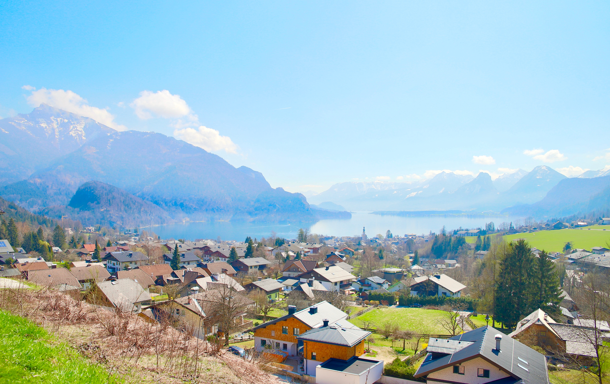

Die Salzburger Natur genießen
Wenn der Frühling wieder Einzug im SalzburgerLand hält, die Sonne mit ihren wärmenden Strahlen die Almen und Berge aus dem Winterschlaf küsst und die Wiesen und Felder im Tal bereits sanft im Wind ihr wogendes ‚Hin und Her’ spielen, dann beginnt hier die Saison der Biker und Radfahrer. Mountainbiker feiern Gipfelsiege, Rennradfahrer ziehen ihre Runden um die glitzernden Seen und bereiten sich auf die nahenden Wettkämpfe vor. Auf den Radwegen verbringen Familien unbeschwerte Stunden, das E-Bike eröffnet ganz neue Möglichkeiten und in den Bike-Parks und auf den Trails stehen Freestyle und Freeride ganz hoch im Kurs. Egal, ob man auf dem Bike einfach einmal den Alltag hinter sich lassen möchte, eine der großen Radveranstaltungen den Ehrgeiz weckt oder man vom Sattel aus die Schönheiten des Landes intensiv erleben möchte – hier im SalzburgerLand ist man als Radler oder Biker immer am genau richtigen Ort.
Deine Bike Trails und Badeorte im Salzburger Land
Finde deinen Badesee im Salzburgerland.
Über unsere Suchfunktion kannst du dir deine liebste Badestelle auf der Karte anzeigen lassen.
Seen im Salzburger Land
Mattsee, Grabensee, Obertrumer See (Trumer Seen) und Wallersee – die vier idyllisch gelegenen Seen mit bester Wasserqualität und eingebettet in einer mild hügeligen Landschaft zwischen gepflegten Wiesen und Wäldern – zeichnen das Salzburger Seenland aus. Diese Vielfalt an Naturschönheiten liegt kaum 20 Autominuten von der Mozart Stadt Salzburg entfernt. Das große Radwegenetz, herrlich erfrischende Strandbäder mit zahlreichen Attraktionen, Bootsverleih und Segelschulen sind bei Familien und sportlich Aktiven besonders beliebt. Für kulinarischen Genuss sorgen die traditionellen Gastronomen mit ihrer ausgezeichneten regionalen Küche. Ein Ausflug mit der Seenland-Schifffahrt oder ein Besuch im Museum sind perfekte Alternativen, sollte die Sonne einmal nicht vom Himmel lachen.
